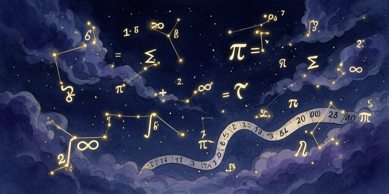
It sounds like the kind of question a kid asks at 2 AM. The kind adults smile at and say, "That's very interesting, dear."
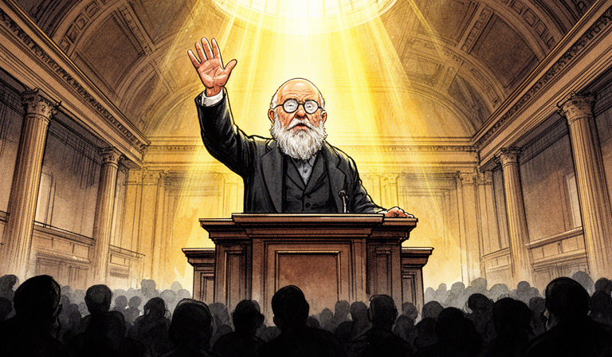
Is there a recipe for ANY logical question?But in 1928, one of the most famous mathematicians alive asked this question seriously. And he expected the answer to be yes.
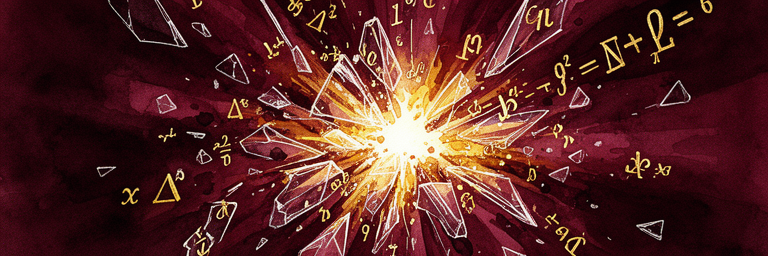
 He was wrong.
He was wrong.
Spectacularly, beautifully, world-changingly wrong.
The story of how we found that out is the story of how computing was born. Not in a lab. Not in a factory. In the mind of a mathematician who liked to run long distances and think about impossible things.
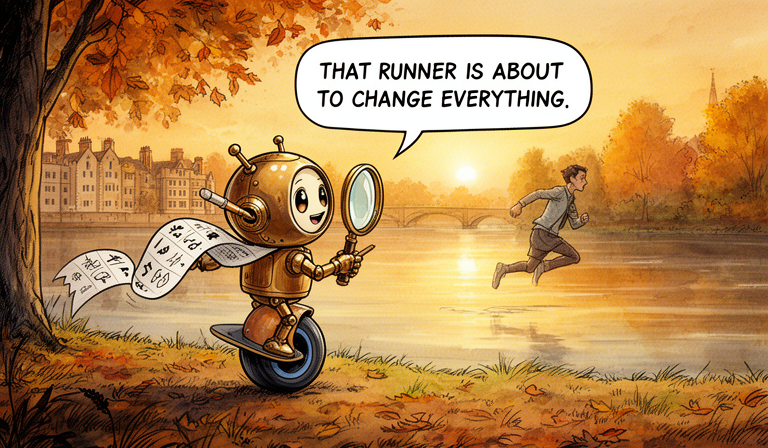
Alan Mathison Turing was born on June 23, 1912, in London. By the time he arrived at King's College, Cambridge, he was already the kind of student who made other students slightly uneasy — not because he was arrogant, but because his mind simply worked differently.
Alan Turing
Born: June 23, 1912 — London
Age in 1936: 23
Role: Fellow, King's College, Cambridge
Known for: Running. Building radios. Thinking about things that shouldn't be possible.
His marathon time (2h 46m) was only 11 minutes slower than the 1948 Olympic gold medalist.
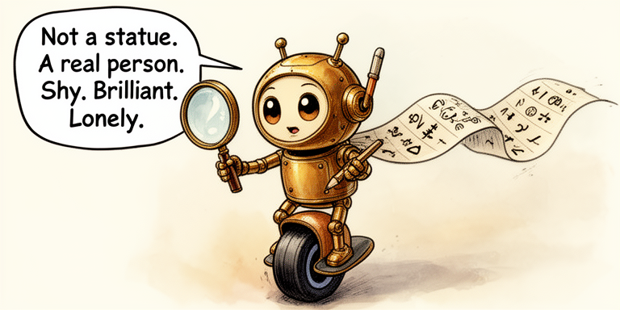
2 hours 46 minutes. Not bad for a thinker!He was shy. He stammered when he spoke. He ran — long, brutal distances, nearly Olympic-qualifying times — because something about the rhythm of running freed his thinking.
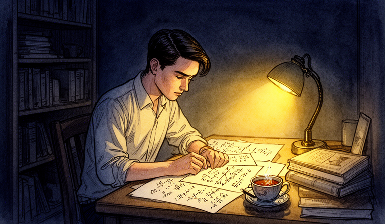
Not a statue. A real person.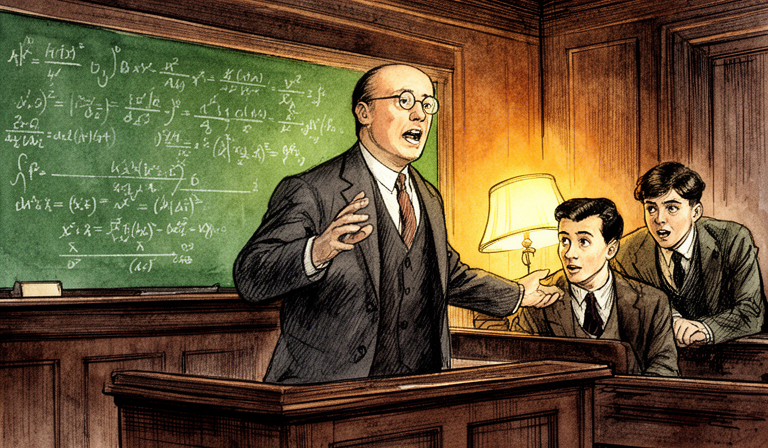
In 1935, Turing attended lectures on the foundations of mathematics given by Max Newman at Cambridge. Newman presented the Entscheidungsproblem and issued a challenge: the question couldn't be answered until someone gave a precise definition of what "a mechanical process" even was.
Most students heard a remark about the state of the field. Turing heard a research agenda.
He was twenty-three years old.
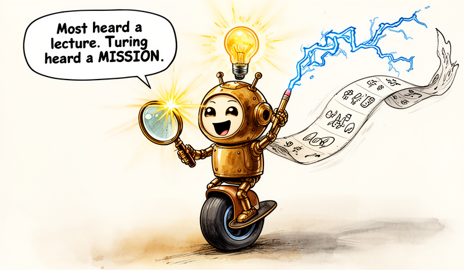
Most heard a lecture. Turing heard a MISSION.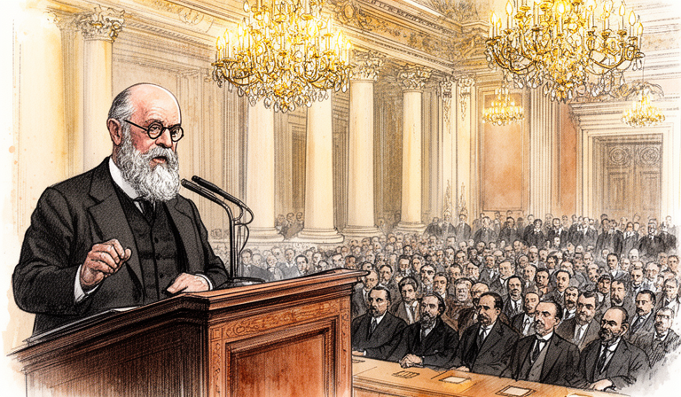
David Hilbert was, in 1928, arguably the most influential mathematician in the world. He stood before the International Congress of Mathematicians in Bologna and issued a challenge — one forming in his mind for decades.
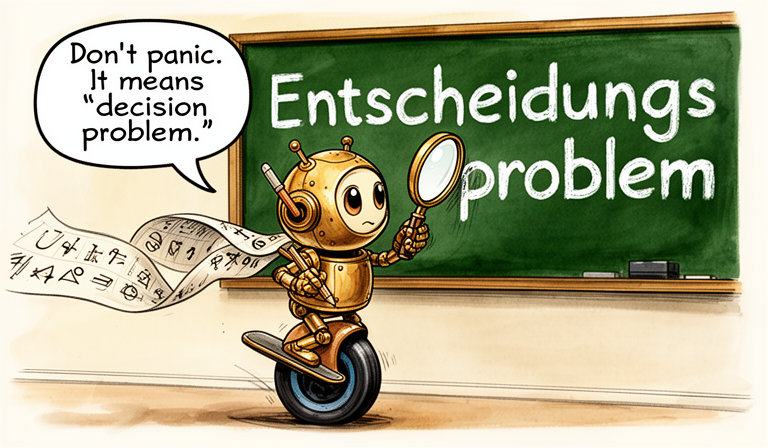
Don't panic. It means 'decision problem.'The Entscheidungsproblem — Hilbert's decision problem
Hilbert believed mathematics could be made perfect. Complete. Consistent. Decidable. He envisioned a kind of ultimate algorithm — a mechanical procedure that could take any mathematical statement and determine, in a finite number of steps, whether it was always true.
Think about what Hilbert was really asking: Is there a recipe — a set of instructions so precise that even a machine could follow them — that can settle every mathematical question ever posed?
Hilbert said this on September 8, 1930 — in Konigsberg, in a radio address. One day earlier, at a conference in the same city, a quiet Austrian logician named Kurt Godel had announced results that would make Hilbert's dream impossible. Whether Hilbert attended Godel's talk or immediately grasped its implications is debated, but the irony is striking.
A century before Hilbert, Ada Lovelace wrote what is recognized as the first algorithm — for Charles Babbage's never-built Analytical Engine. She even speculated machines might compose music. The idea of mechanical computation had deep roots. What was new in 1936 was not the dream, but the proof of what such machines could — and couldn't — do.
Hilbert wanted a universal truth machine for mathematics — a single procedure that could decide any statement, mechanically, without needing human insight. This was the dream. Turing would show it was impossible.
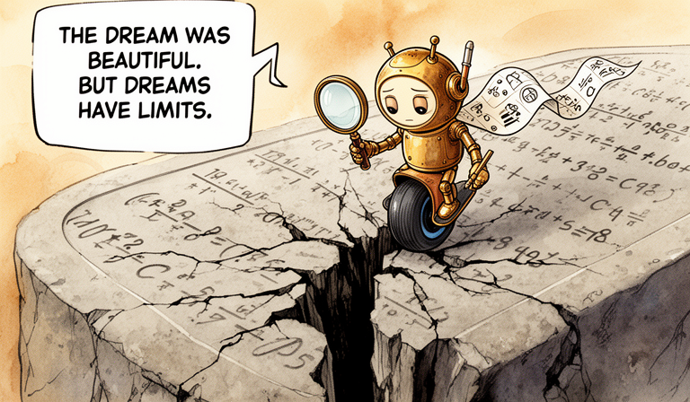
The dream was beautiful. But dreams have limits.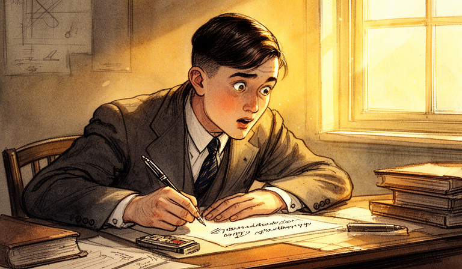
THIS is the idea that started everything.Turing's genius was not in building something complex. It was in stripping computation down to its absolute essence.
He asked himself: when a human mathematician sits down to solve a problem, what are they actually doing? They're looking at symbols on paper. They're following rules. They're writing new symbols. They're deciding what to do next based on what they see.
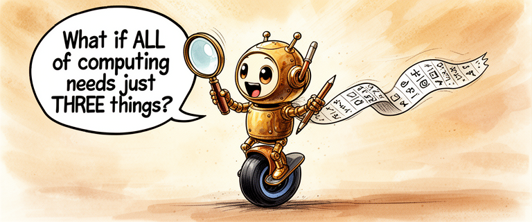
So Turing imagined the simplest possible version of this process. He called it an a-machine (automatic machine) — we now call it a Turing Machine, a name that came into use after Alonzo Church used it in his 1937 review of Turing's paper — and it has just three parts:
A Turing Machine: tape, head, state register, and rule table
1. An infinite tape divided into cells. Each cell holds a single symbol — a 0, a 1, or blank. The tape stretches infinitely in both directions. This is the machine's memory.
2. A read/write head that sits over one cell at a time. It reads the symbol, can erase it or write a new one, then moves one cell left or right.
3. A rule table — the machine's "brain." A finite list of instructions: "If you're in this state and see this symbol, write this, move this direction, switch to this state."
That's the whole machine. Tape. Head. Rules. State. Nothing else.
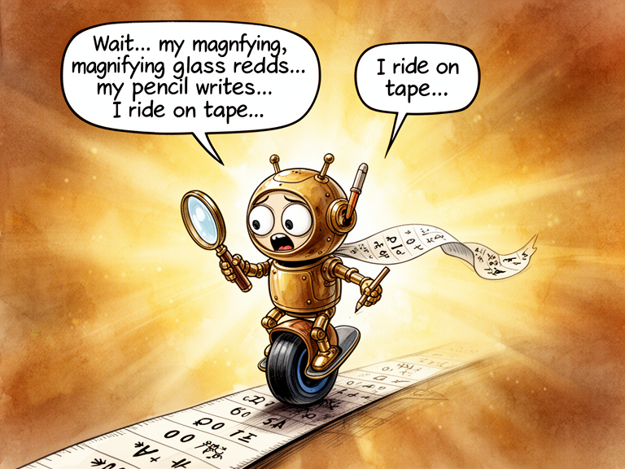
Try it! Start in state A, reading a 0.Imagine a very patient person sitting at an endlessly long scroll of paper, with a pencil, an eraser, and a very precise instruction booklet. They can only see one square at a time. They follow the booklet exactly. No creativity, no shortcuts. Just rules.
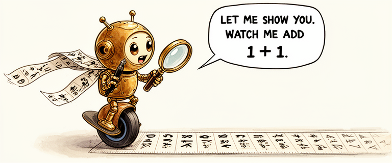
Let's watch a Turing Machine add 1 + 1.We'll represent numbers in unary: the number 2 is 11, the number 3 is 111. A 0 separates the two numbers we want to add.
Our tape starts: _ 1 0 1 _ — that's 1 (one mark) + 1 (one mark). We want the machine to produce 11 (two marks) = 2.
The strategy: find the 0 separator, replace it with 1 (joining the two groups), then erase the last 1 (since we gained an extra mark by filling the gap).
Step-by-step trace of a Turing Machine adding 1+1 in unary
A Turing Machine is agonizingly slow and absurdly simple. It does one tiny thing at a time. But here is Turing's insight: that's enough. Given enough time and enough tape, this humble machine can compute anything that any computer — past, present, or future — can compute. Simplicity is not weakness. Simplicity is the foundation.
Want to build your own Turing Machine? Write rules, load a tape, and watch it compute step by step. Pre-loaded examples include unary addition, binary increment, and a palindrome checker.
Open Turing Machine Sandbox →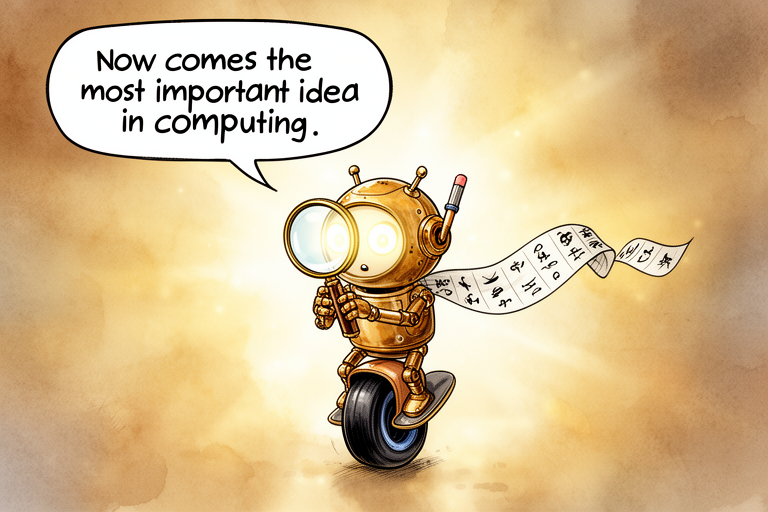
This might be the most important idea ever.Here is the leap that separates Turing's work from everything that came before.
Every Turing Machine we've talked about so far is a specialist. One machine adds. A different machine multiplies. Another checks if a number is prime. You'd need a separate machine — with its own unique rule table — for every task.
But Turing asked a beautiful question: What if the rule table itself was just data?
What if you could write a description of any Turing Machine — its states, its rules, its starting configuration — as a string of symbols on the tape? And what if there existed a single machine that could read that description and then behave exactly as the described machine would?
The Universal Turing Machine: one machine that simulates any other
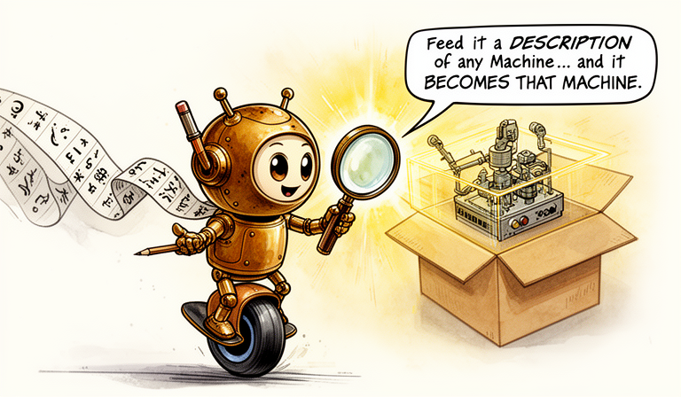
ONE machine that simulates ANY other machine.This is the Universal Turing Machine (UTM). It takes two inputs on its tape:
1. A description of some other Turing Machine M
2. The input that M is supposed to process
Then the Universal Machine simulates M running on that input, step by step. One machine. Any program. Any input.
Does that sound familiar? It should. This is exactly what your computer does. The hardware is the Universal Machine. The software — every app, every program — is the description of a specific machine, loaded into memory. Turing described the fundamental architecture of all general-purpose computers in 1936, a full decade before the first electronic ones were built.
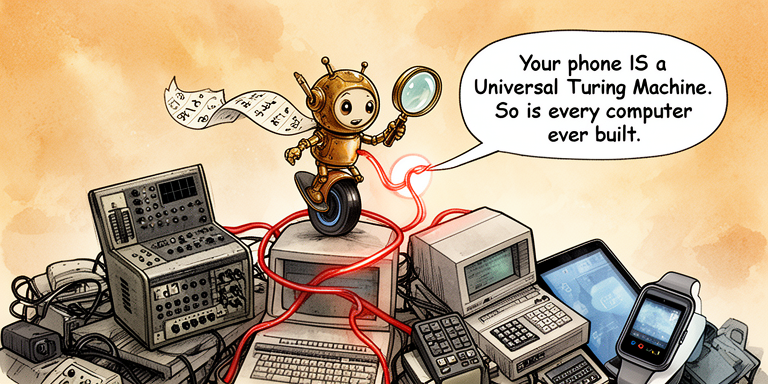
One idea powers ALL of these. Seriously!The Universal Turing Machine is the idea behind every general-purpose computer. Hardware is the universal machine. Software is the description of a specialized machine. Turing separated the machine from the instructions — and that separation is why you don't need a different device for every task.
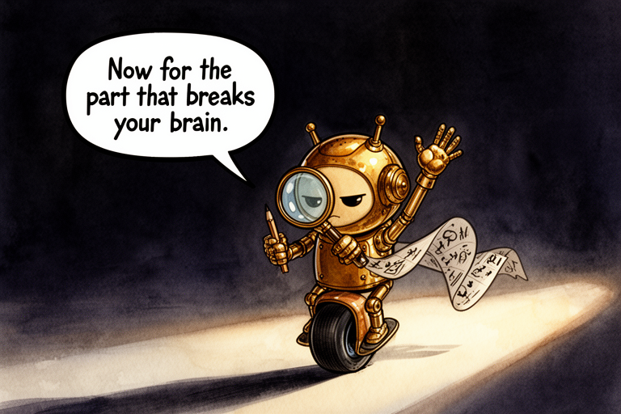
Some questions are IMPOSSIBLE. Provably.Can you build a SINGLE machine that works for ANY program and ANY input, and tells you — before running it — whether that program will eventually stop or run forever?
This is the Halting Problem: given a program P and an input I, will P eventually halt when run on I?
It seems like this should be solvable. Surely a sufficiently clever analyzer could look at any program and figure out whether it loops forever. Right?
Turing proved the answer is no. No such universal analyzer can exist.
The Halting Problem: a proof by contradiction that no universal halting detector can exist
Construct a devious program D: it asks H whether a program halts when given itself as input — then does the opposite.
Run D on itself. If H says "halts" — D loops forever. If H says "loops" — D halts. Either way, H gives the wrong answer. Therefore H cannot exist.
Important: This does NOT mean you can never tell if a specific program halts. A simple print("hello") obviously halts. A while True loop obviously doesn't. The halting problem says there is no SINGLE algorithm that correctly answers for every possible program. The impossibility is about universality.
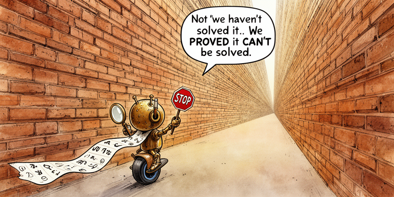
Not 'we haven't solved it.' We PROVED we can't.Some problems are not merely unsolved — they are provably unsolvable. The Halting Problem was the first. Turing didn't just fail to find a solution; he proved that no solution can ever exist, for any machine, no matter how advanced. Computation has hard, permanent limits.
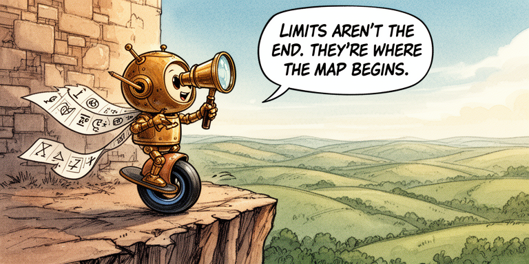
Think about it: The proof uses diagonalization — creating something that deliberately contradicts any attempt to account for it. Like a student who always does the opposite of what the teacher predicts. Can you think of other paradoxes? (Hint: "This sentence is false.")
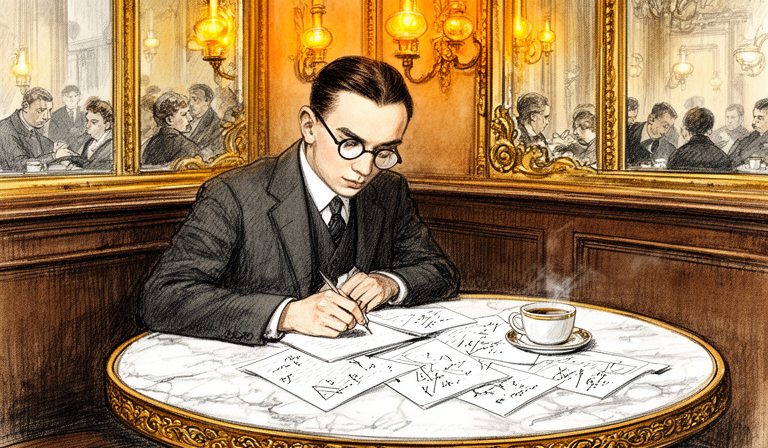
In 1931 — five years before Turing's paper — Kurt Godel published a result that shattered Hilbert's dream before the Turing Machine was even imagined.
Godel was 25, Austrian, and painfully shy. His paper proved two devastating theorems:
Godel's First Incompleteness Theorem: In any consistent formal system powerful enough to describe basic arithmetic, there will always be true statements that the system cannot prove. No matter how many axioms you add. The system will always contain truths it cannot reach.
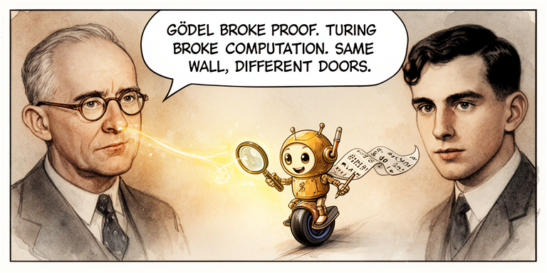
A puzzle that can't even prove it's not broken?!Godel's Second Incompleteness Theorem: Such a system cannot even prove its own consistency. It can't guarantee that it won't contradict itself.
Think of it this way: imagine a library that tries to catalog every true book. Godel proved that any such library will always have missing shelves — true books it cannot catalog. And it can never prove that its own catalog doesn't contain errors.
Hilbert's three pillars — and how they fell
This does not mean mathematics is broken. Godel's theorems apply to formal systems powerful enough to encode basic arithmetic. Mathematicians still prove theorems every day. What Godel and Turing showed is that no single formal system can capture all mathematical truth.
Godel and Turing didn't destroy mathematics — they gave it honest boundaries. And by defining exactly what can be computed, Turing created the theoretical foundation for every computer that would ever be built.
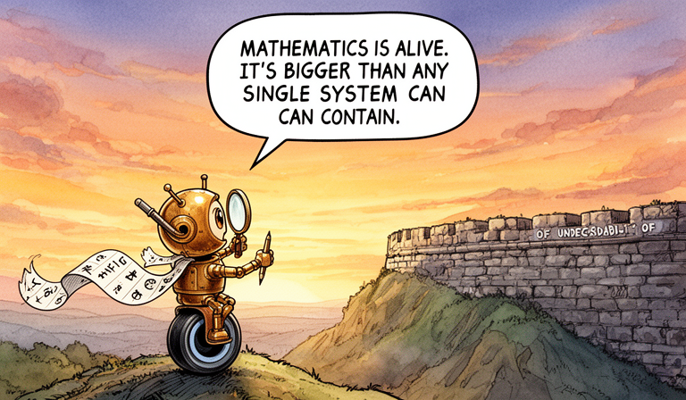
Limits aren't the end. They're where the map begins.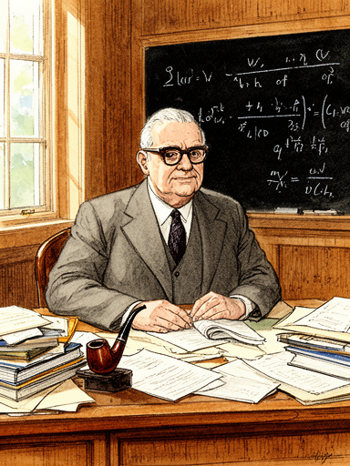
In 1936, while Turing was writing at Cambridge, Alonzo Church at Princeton published his own answer to the Entscheidungsproblem using the lambda calculus — a completely different formalism. He reached the same conclusion: unsolvable.
When Turing learned of Church's work, he was initially devastated — he'd been scooped. But his advisor, Max Newman, pointed out that Turing's approach was different enough to deserve publication. Turing published "On Computable Numbers" in November 1936, then traveled to Princeton to complete his PhD under Church.
Multiple formalisms, one destination: the Church-Turing Thesis
This convergence led to the Church-Turing Thesis: any function that can be computed by any reasonable mechanical process can be computed by a Turing Machine.
This is not a mathematical theorem — it cannot be proved, because "reasonable mechanical process" is an informal concept. It's called a thesis precisely because you can't formally prove a claim about an intuitive idea. But for nearly 90 years, the evidence has been overwhelming. Nobody has found a counterexample.
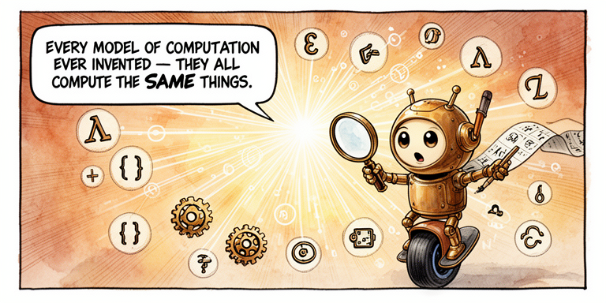
In 90 years, nobody's found a counterexample.What about quantum computers? The Church-Turing thesis says they can't solve undecidable problems. But they might solve certain problems exponentially faster — Shor's algorithm can factor large numbers far faster than any known classical method. Whether "faster" counts as "more powerful" is an active, ongoing debate. The thesis is about what's computable in principle, not how efficiently.
The Church-Turing Thesis: anything computable by any mechanical process can be computed by a Turing Machine. Every computer — from a 1940s room-sized vacuum-tube monster to the phone in your pocket — is doing something a Turing Machine could do. Turing defined the playing field that all of computing lives on.
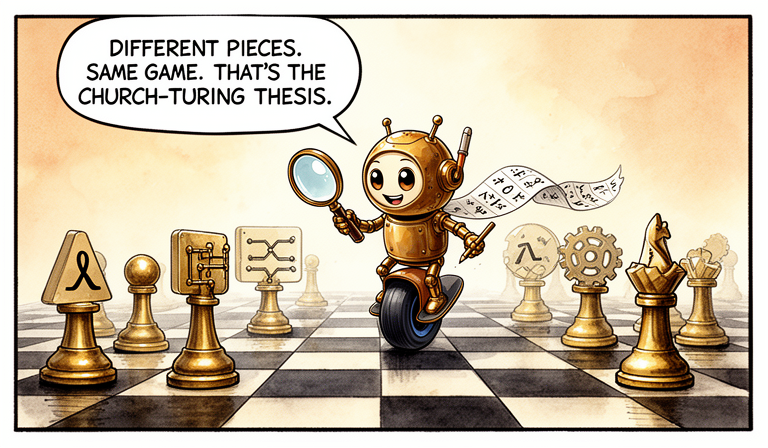
Different pieces, same game. That's the whole point!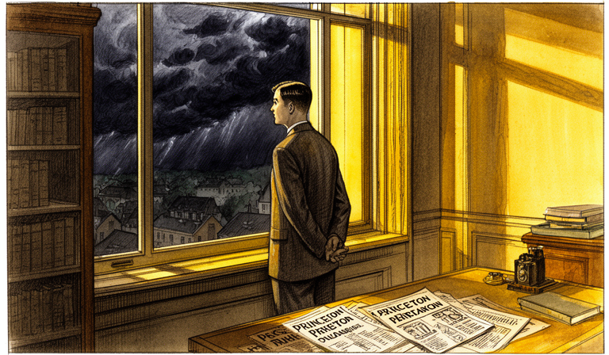
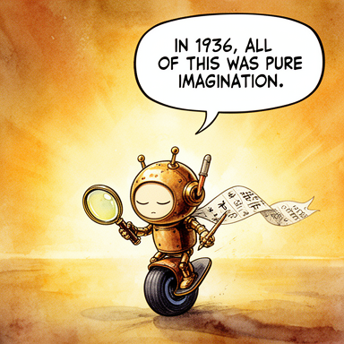
In 1936, all of this was pure imagination.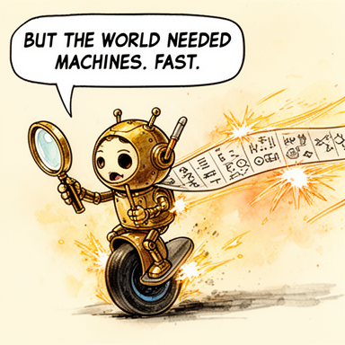
But the world needed machines. Fast.Alan Turing returned to Cambridge from Princeton in 1938. Within a year, Britain was at war. Turing was recruited to Bletchley Park — the top-secret code-breaking center — where the abstract ideas from his 1936 paper would collide with brutal, urgent reality.
But Turing was not the only one thinking about building machines. In Berlin, Konrad Zuse was already constructing a programmable computer in his parents' living room. In the United States, engineers would soon begin designing ENIAC — a 30-ton vacuum-tube behemoth. And John von Neumann would read Turing's paper and realize: the Universal Turing Machine wasn't just a mathematical abstraction. It was a blueprint.
From idea to machine: the timeline continues in Issue 2
The idea that started everything was about to become a machine.
And then many machines.
And then a revolution that hasn't stopped yet.
In 1936, Alan Turing defined what computation is, invented the concept of a universal programmable machine, and proved that some problems are forever beyond the reach of any computer. He did it with nothing but pencil, paper, and relentless thinking. Every computer, every phone, every server, every AI system is a descendant of the machine he imagined. The idea came first. The machines came later.
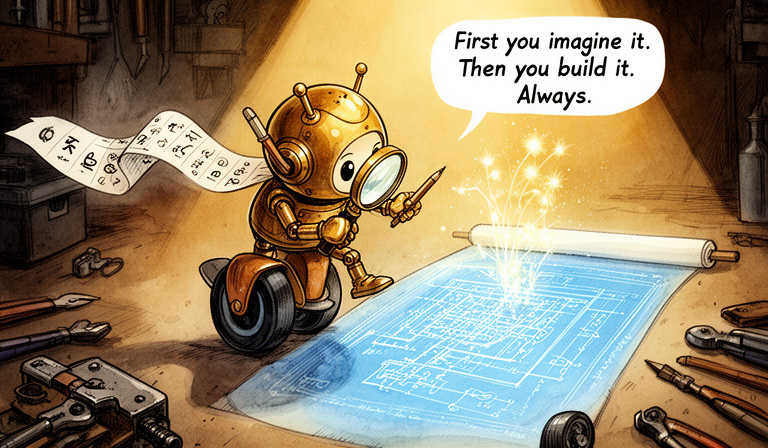
First you imagine it. Then you build it. Always.Think about it: Turing's machine was imaginary — but the ideas were real. Einstein's elevator (general relativity), Schrodinger's cat (quantum mechanics), Turing's machine (computation). Why do you think imagining something precisely can be just as powerful as building it?
References & Further Reading
- paper On Computable Numbers, with an Application to the Entscheidungsproblem. — Turing, A.M (Proceedings of the London Mathematical Society)
- book Alan Turing: The Enigma. — Hodges, Andrew
- book The Annotated Turing. — Petzold, Charles
- book The Church-Turing Thesis. — Copeland, B. Jack
- paper On Formally Undecidable Propositions of Principia Mathematica and Related Systems. — Godel, Kurt
- book The Confluence of Ideas in 1936. — Gandy, Robin
- video Turing Machines Explained — Numberphile (YouTube)
- video Turing Machines — Computerphile (YouTube)
- paper An Unsolvable Problem of Elementary Number Theory. — Church, Alonzo (American Journal of Mathematics)
- book The Universal Computer: The Road from Leibniz to Turing. — Davis, Martin
- book Turing Machines. — De Mol, Liesbeth